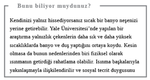
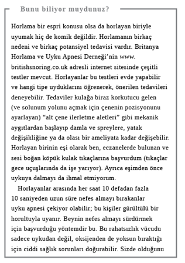

Gün Sonu
Günün Kapanışı
Yatma vakti yaklaşırken artık fişi çekip kendinize hak ettiğiniz dinlenme fırsatını tanımanın zamanı gelmiş demektir.
Yüz yıkamada sabun ve su mu, temizleyici mi?
Cilt temizliği için yalnızca sabun ve su kullanma fikri insanda sıhhatlilik duygusu uyandırır. Ancak bu yöntem gözenekleri temizleme, leke ve enfeksiyonları önleme işini yerine getirse de kurutucu bir etki yaratabilir. Sabun cildin üst tabakasındaki doğal yağları alır ve yüzde rahatsızlık verici bir gerilme yaratır. Britanya Dermatologlar Birliği’ne göre su ve sabunla yıkama, kuru ciltlerde görülen acılı ve kaşıntılı dermatit hastalığına yol açabilir. Öte yandan hidrofil pamukla uygulanacak basit, uygun fiyatlı bir temizleyici hem makyaj ve kiri giderir hem de cildinizin nemli kalmasını sağlar. Sabun ve suyu tercih ediyorsanız sonrasında cildinizi rahatlatmak için nemlendirici kullanın.
Yanıt: Temizleyici
Gece mi banyo yapmalı, sabah mı?
Vaktiniz varsa sabah banyosu sizi güne hazırlayabilir ama amacınız gece iyi bir uyku çekmekse banyo hem rahatlamanızı sağlayacak hem de vücudunuzu uyku için gerekli ısıya getirecektir.

Bilimciler uykuya dalmak için en uygun oda ısısının 20-24 derece olması ama gece boyunca serinlememiz gerektiğini ve bunun için de yaklaşık 17 derecenin ideal olduğunu düşünüyor (terlediğinizde sürekli uyanmanızın nedeni budur). Bu durumda sıcak banyo yapmak akla yatkın görünmese de banyo aslında serinleme sürecine yardımcı olur çünkü banyodan çıktığımız anda vücut sıcaklığımız hızla düşer. Sıcak bir banyo için yatma vaktinden bir saat kadar öncesi idealdir.
Yanıt: Gece

Yemek günlüğü mü tutmalı, iyi şeyler listesi mi?
Beslenme uzmanları diyet yapanlara her gün yediklerini tek tek yazacakları bir yemek günlüğü tutmalarını öneriyor. Günlük insanların kendilerini gerçekte olduğundan daha az yedikleri konusunda kandırmalarını engelliyor. Ama bu bile kesin çözüm olmayabilir. Kimi zaman yüzlerce kalorinin gözardı edildiği yemek günceleri, hatalı bilgiler barındırmakla ünlenmiştir. Ancak diyet yapıyor ve motivasyonunuzu korumakta zorlanıyorsanız bilin ki olumlu düşünceleri, olayları ve duyguları yazmanın bize kendimizi daha mutlu hissettirdiğine dair artık çok sayıda kanıt mevcut. Bunlar minnet duyduğumuz şeyler de olabilir, mutlu bir geleceğin hayali de… “Yaşasın, yarım kilo verdim” yazamadığınız sürece iyi şeyler listesi sizi daha ince biri yapamaz ama kendinizle ilgili daha çok mutluluk duymanızı, diyetten ayrılmama konusunda daha olumlu düşünmenizi sağlayabilir.
Yanıt: İyi şeyler listesi

Seks mi yapmalı, uyumalı mı?
İş ve çocuk yetiştirme arasında gidip gelen çiftlerin çoğu zaman sekse ayıracak ne vakitleri kalır ne de enerjileri, sonunda da seksten tamamen vazgeçebilirler. Ancak sevişmenin, özellikle de uzun vadeli ilişkilerde olmaması, depresyonla ve psikolojik sorunlarla ilişkilendirilir. Seks yapmayan çiftler daha çok tartışır, kendilerini stresli, değersiz hisseder ve kendilerine verdikleri değer azalır. Cinsel hayatın terk edilmesi de kaçınılmaz olarak boşanmayla ve ilişki çözülmesi riskinde artışla ilişkilendirilir.
Dişilerde cinsel arzu uzmanı Rosemary Besson’ın araştırmasına göre, özellikle kadınlar için bunun üstesinden gelmenin yolu işe koyulmak; yani sekse. Besson yüzlerce kadınla yapılan görüşmelerde sevişmede arzunun neden değil, sonuç olduğunu keşfetti. Bunun sebebi de seksin başlangıcında kadınların fazla arzu duymasalar da sonradan uyarılmaları ve bunu da arzunun takip etmesiydi. Öte yandan erkekler sevişme fikriyle uyarılmaya daha yatkındı ki pornografinin, seksi çamaşırlar giymiş eşin veya müstehcen konuşmaların onları tahrik etmesinin nedeni de budur.
Yanıt: Seks yapmalı

Uykusuzluk: Yatakta mı kalmalı, kalkmalı mı?
Günümüzün 7/24 kültüründe insanlar giderek daha fazla uyku eksikliği yaşıyor olmamızdan endişe ediyor. Oysa İngiltere, Loughborough Üniversitesi, Uyku Araştırma Merkezi’nden Profesör Jim Horne gibi uyku uzmanları bu konuda şüpheliler ve yapılan çalışmalara göre yetişkinlerin gecede sadece yedi ila yedi buçuk saat uykuya ihtiyacı olduğunu, mutlak minimumun ise yaklaşık beş saat olduğunu söylüyorlar. Vücudumuz değişik miktarda uykuya adapte olabiliyor. Elektrik yokken atalarımız, özellikle de mevsimlere göre gündüz saatlerinde büyük değişikliklerin görüldüğü bölgelerde, kışın yaza kıyasla daha uzun süre uyurlardı. Bu yüzden hepimiz ara sıra uykusuz geçen gecelerle başedebilecek kabiliyete sahibiz.
Uykusuzluk değişik formlara bürünebilir ama tipik olarak uykuya dalmada zorluk ve/veya geceleri sık uyanma ya da sabah erkenden uyanma ve yeniden uyuyamama gibi özellikleri içerir. Bu durumun sıklaşması halinde uzman doktorlar genelde sakinleştirici türü bir tabletin kısa süreli kullanımının yanı sıra altta yatan psikolojik nedeni ele alacak bilişsel davranış terapisi öneriyorlar. Uyku sorunları (ardında tıbbi bir neden yoksa) genelde uyku zorluğu çekenlerin bir diğer tipik özelliği tarafından tetiklenen anksiyeteye bağlıdır: Uykusuzluk konusunda kaygılanmak. Terapiyle birlikte gevşetici ilaçların etkili olmasının nedeni de budur.
Ana mesaj şu ki, düzenli aralıklarla uyumakta veya yeniden uykuya dalmakta zorlanmaya başlarsanız, bu konuda kaygılanmanız durumu daha da kötüleştirir.
Bu yüzden beyninizi fazlaca uyarmadan dikkatinizi odaklayabileceğiniz bir şeyler bulmanız en iyisidir.

Örneğin, koyun saymak, derin nefes alıp vermek, güzel bir bahçede hayali bir tur atmak ve çiçeklere ayrıntısıyla bakmak. O da işe yaramazsa yapabileceğiniz en iyi şey, kalkıp yapboz ya da ütü gibi akıl yormayacak ve tekrara dayalı bir şey yapmaktır. Hâlâ mı uyanıksınız? Doktora görünün.
Yanıt: Kalkmalı